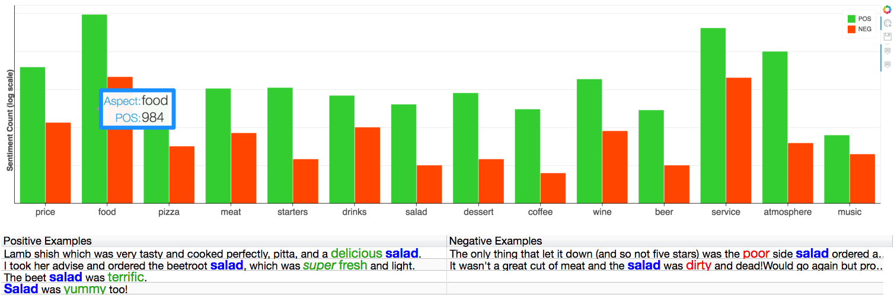

Aspect Based Sentiment Analysis (ABSA) Solution¶
Overview¶
Aspect Based Sentiment Analysis is the task of co-extracting opinion terms and aspect terms (opinion targets) and the relations between them in a given corpus.
Solution overview¶
The solution flow includes three stages: first, it generates domain-specific aspect and opinion lexicons based on an unlabeled dataset; second, it enables the user to view and edit those lexicons; and finally, it enables the user to select an unlabeled target dataset from the same domain, classify it, and generate an aspect-based sentiment report.
For lexicon extraction, the solution calls the training step of NLP Architect’s ABSA training, whereas for sentiment classification, the solution calls NLP Architect’s ABSA inference. For more details see ABSA.
Solution execution¶
All three stages of the solution are end-to-end executed by a dedicated UI.
An example for running the UI is available at examples/absa/solution/absa_solution.py.
python3 examples/absa/solution/absa_solution.py
Flow¶

Workflow and UI¶

Figure 1: The solution’s UI.
Following is a description of the 3 steps of the solution operation:
Step 1: The first step of the flow is to select an input dataset for lexicon extraction, performed by
clicking the ‘Extract lexicons’ button shown in Figure 1. Once a dataset* is selected, the system
performs the lexicon extraction process. Note that, this step can be skipped, in case the user
already has aspect and opinion lexicons. In order to load pre-trained aspect and opinion lexicons
select ‘Edit Lexicons’ -> ‘Load’ (figure 1).
For demonstration purposes, we provide pre-trained lexicons that are located at examples/aspects.csv and examples/opinion.csv
We also provide, a sample dataset** for lexicon extraction, at datasets/absa/tripadvisor_co_uk-travel_restaurant_reviews_sample_2000_train.csv.
Step 2: The user can choose to edit an aspect lexicon or an opinion lexicon that were generated in the previous step by selecting the ‘Aspect Lexicon’ or ‘it Opinion Lexicon’ tab (see figure 1). As shown in Figure 1, in which the ‘Aspect Lexicon’ has been selected, the ‘Term’ column displays the aspect terms while the ‘Alias1-3’ columns display aspect terms that have the same semantic meaning. Upon selecting a specific aspect, the ‘Examples’ view on the right-hand side, displays text snippets from the input dataset that include this term (highlighted in blue). the user can delete (by unchecking the term’s checkbox), add or modify the lexicon items. The opinion lexicon editor (not shown) functions similarly to the aspect lexicon editor except that it includes a ‘Polarity’ column and a ‘Score’ column. Both the polarity and the score can be edited by the user.
Step 3: A target dataset* and its classification are performed by clicking the ‘Classify’ button in
Figure 1. Once the dataset is selected the system starts the sentiment classification process and
generates visualization of the sentiment analysis results under the ‘Analysis’ tab (figure 2).
For demonstration purposes we provide a sample classification dataset**, located at datasets/absa/tripadvisor_co_uk-travel_restaurant_reviews_sample_2000_test.csv.
* The format of the input dataset to steps 1 and 3 is a single raw text file with documents separated by newlines or a single csv file containing one doc per line or a directory containing one raw text file per document or a directory that includes parsed text files.
** Restaurants reviews from tripadvisor.co.uk under the Creative Commons Attribution-Share-Alike 3.0 License (Copyright 2018 Wikimedia Foundation).
Figure 2. Results visualization: Top: bar-chart that displays the amount of positive and negative sentiment towards each aspect. Bottom: textual table that displays (upon clicking a specific aspect on the bar chart) sentences that include positive/negative sentiment towards that specific aspect. Aspect terms are colored in blue and opinion terms are colored in green/red: